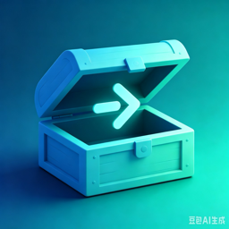

岗位 Bundle
按工作角色预选常用工具，也可岗位对比、合并高级模式。

启椟macOS 15+ · Homebrew 驱动 · 本地优先
换新 Mac、重装系统、入职新公司——把几十上百款开发工具，变成选岗位、勾清单、一键装好。
免费使用 · 安装来自 Homebrew 生态 · 不内置、不分发破解软件
不替代 Homebrew，而是把它变成对互联网岗位友好的装机流程。
按工作角色预选常用工具，也可岗位对比、合并高级模式。
精选 Catalog、分类浏览，以及按 Homebrew 安装量的近期热门。
扫描 brew / mas，批量升级、卸载、维护与信任修复入口。
运行时探测、漂移对比、快照导出导入，换机向导一键补齐。
自然语言描述装机需求，推荐组合并协助排查安装失败。
经典侧栏适合扫货；沉浸对话适合「帮我配环境」式提问。
需要 macOS 15 或更高版本。建议从 GitHub Releases 获取已公证的 DMG。
若提示「已损坏」，多为 Gatekeeper 隔离：请使用正式签名公证包，或在系统设置 → 隐私与安全性中允许打开。
强制退出「启椟」（⌥⌘⎋）。活动监视器里若有残留 brew 进程，可结束后再试。批量安装时请避免同时狂跑大量其它终端任务。
将「启椟」拖到废纸篓。可选删除 ~/Library/Application Support/Kidux（仅清本应用数据，不会卸掉已用 brew 安装的软件）。
Bug 请开 Issues；用法问答用 Discussions。源码与构建说明见仓库 README。